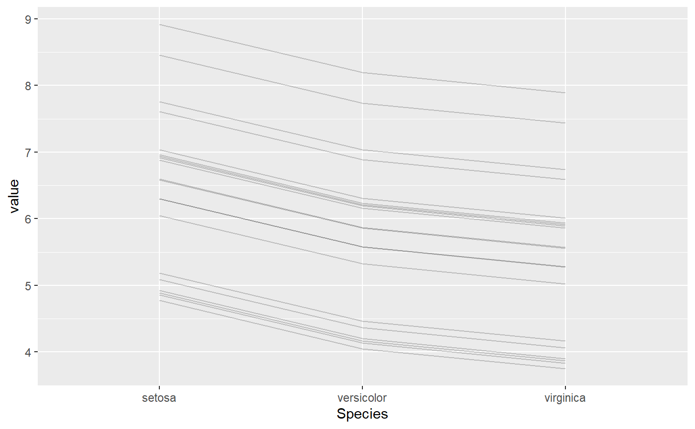
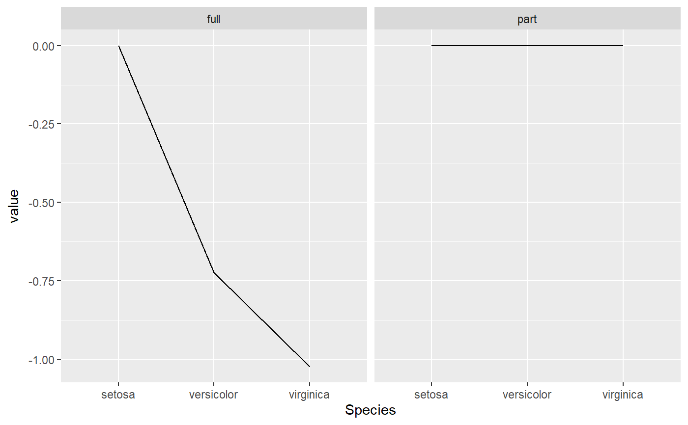
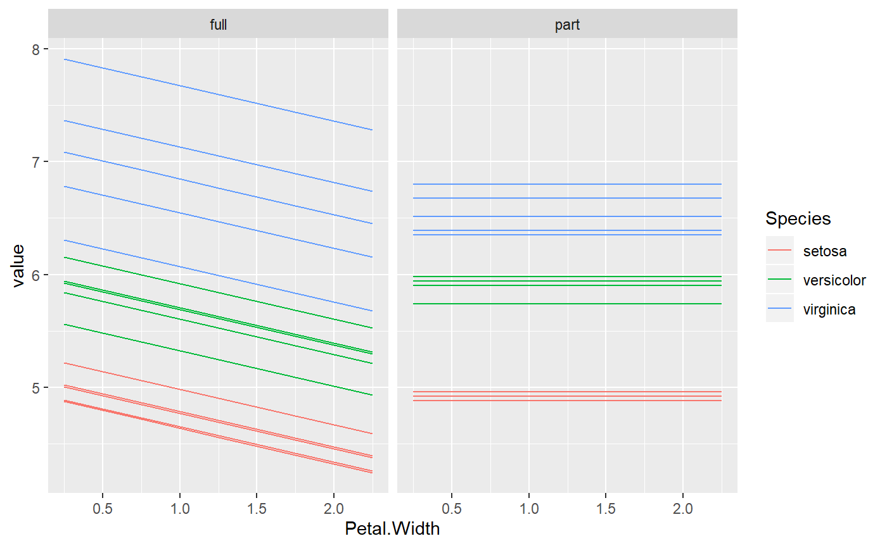
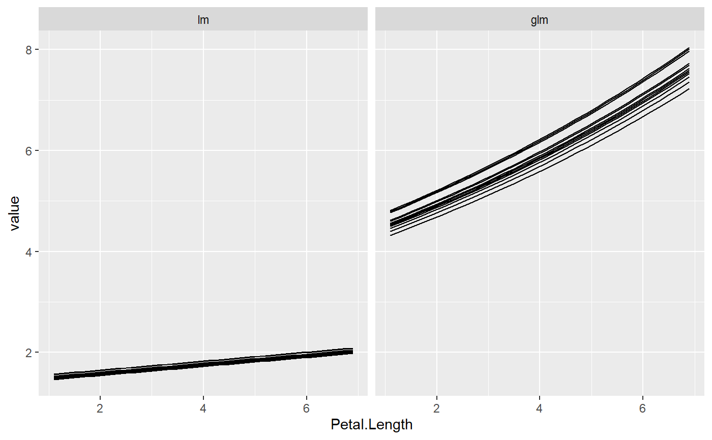

Visualize Ceteris Paribus Profiles
plot.light_ice.RdMinimal visualization of an object of class light_ice as geom_line. The object returned is of class ggplot and can be further customized.
# S3 method for light_ice plot(x, facet_scales = "fixed", rotate_x = FALSE, ...)
Arguments
| x | An object of class |
|---|---|
| facet_scales | Scales argument passed to |
| rotate_x | Should x axis labels be rotated by 45 degrees? Default is FALSE. |
| ... | Further arguments passed to |
Value
An object of class ggplot2.
Details
Each observation is visualized by a line. The first "by" variable is represented by the color, a second "by" variable or a multiflashlight by facets.
See also
Examples
fit_full <- lm(Sepal.Length ~ ., data = iris) fit_part <- lm(Sepal.Length ~ Petal.Length, data = iris) mod_full <- flashlight(model = fit_full, label = "full", data = iris, y = "Sepal.Length") mod_part <- flashlight(model = fit_part, label = "part", data = iris, y = "Sepal.Length") mods <- multiflashlight(list(mod_full, mod_part)) grid <- expand.grid(Species = levels(iris$Species), Petal.Length = 2:4) plot(light_ice(mod_full, v = "Species"), alpha = 0.2)ir <- iris ir$log_sl <- log(ir$Sepal.Length) fit_lm <- lm(log_sl ~ Petal.Length + Petal.Width, data = ir) fit_glm <- glm(Sepal.Length ~ Petal.Length + Petal.Width, data = ir, family = Gamma(link = log)) fl_lm <- flashlight(model = fit_lm, label = "lm", y = "log_sl", linkinv = exp) fl_glm <- flashlight(model = fit_glm, label = "glm", y = "Sepal.Length", predict_function = function(m, X) predict(m, X, type = "response")) fls <- multiflashlight(list(fl_lm, fl_glm), data = ir) plot(light_ice(fls, v = "Petal.Length", indices = indices))